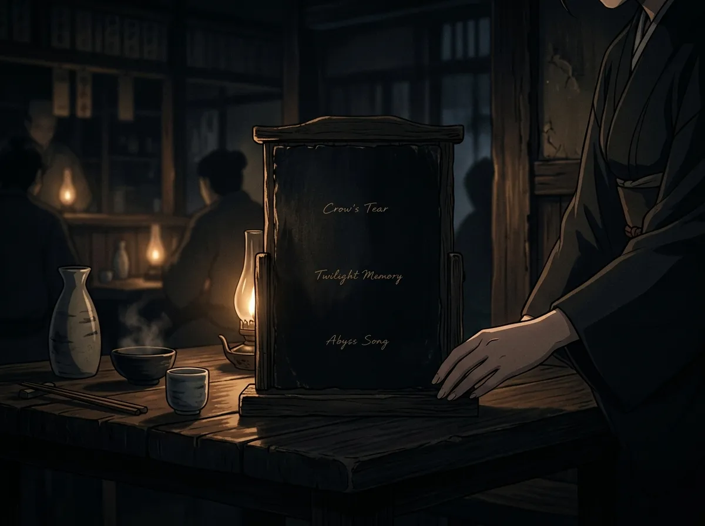
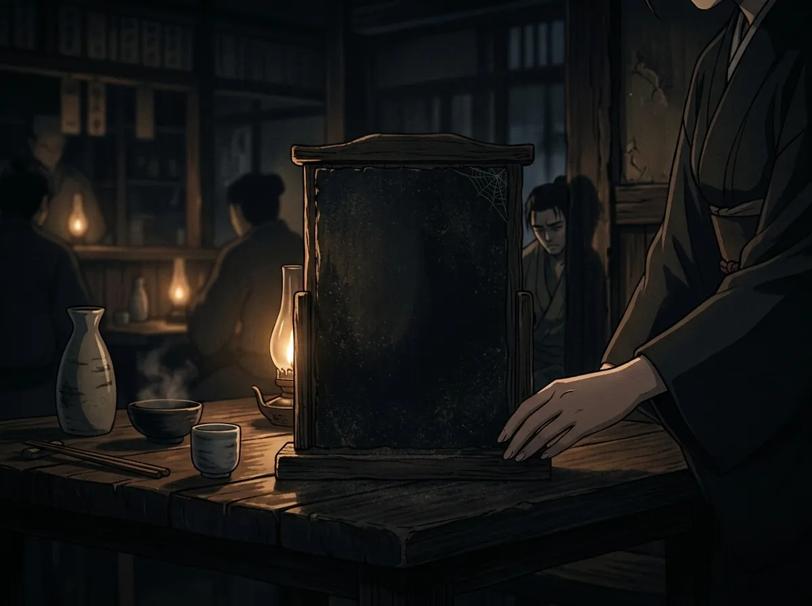
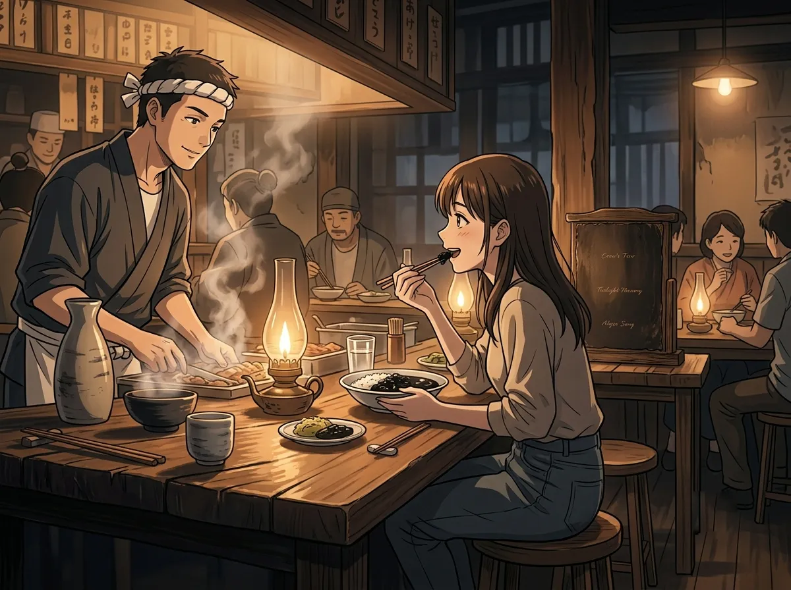
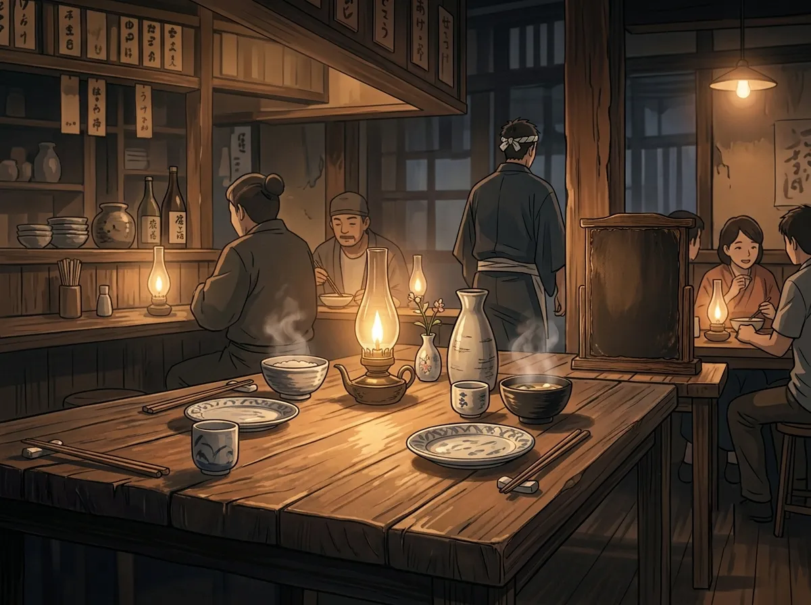

His food was always black. No one dared to complain.
He opened a restaurant once. No one knows why.
He wasn't a chef. He had never been a chef. He didn't even eat much. But one day, he opened a restaurant. A small one. In a quiet street. With a black sign, a black door, and a black menu.
Three items. All black. All mysterious. All terrifying.
Customers came. They looked at the menu. They looked at him. They ordered. They ate. They said nothing.
No one dared to complain. Because his eyes didn't look like a chef's eyes. They looked like someone who had done things. Things you didn't want to know about.
This is the story of that restaurant. And the one person who told him the truth.

The menu was black. The text was black. You could only read it if you held it up to the light. (He didn't tell anyone that. They figured it out themselves.)
Three items.
Item 1: Black. (He didn't give it a name.)
Item 2: Also black. (But slightly different.)
Item 3: Black. (The blackest.)
No one asked what they were. No one asked what was in them. No one asked why they were all black.
People just ordered. They ate. They left. They never came back. But they never complained either.
The menu didn't describe anything. It didn't give prices. It didn't give ingredients. It just said "Black" three times.
And people still ordered. Because the man behind the counter wasn't someone you said no to.
He wore black. He stood in a black apron. He looked at you like he was waiting for you to make a mistake. Not a cooking mistake. A life mistake.

The restaurant had a review board. It was black. It was empty.
No one wrote reviews. No one dared. What would they say? "The food was black"? "I ate something I couldn't identify"? "I didn't want to complain because the chef might hurt me"?
People left. They didn't come back. They didn't tell their friends. They didn't post online.
It wasn't because the food was bad. (No one knew if it was bad. Everything was black. How could you tell?)
It was because he made people uncomfortable. He stood there. He watched them eat. He didn't smile. He didn't ask if they liked it. He just watched.
The review board stayed empty. Not because no one had opinions. Because no one was brave enough to write one down.
He didn't care. He didn't check the board. He didn't look at reviews. He just cooked. He just stood. He just watched.
The restaurant survived. Not because it was good. Because no one was brave enough to tell him to close.

One day, she walked in.
She looked at the menu. She looked at him. She looked at the empty review board. She looked at the black food. She ordered.
He served her. She ate. He watched her eat.
Then she said it.
"This is actually good."
He didn't move. He didn't speak. He didn't blink. He just looked at her.
She wasn't afraid. She wasn't lying. She wasn't trying to be nice. She was just... honest.
"It's a little salty," she said. "But I like the texture. What is it?"
No one had ever told him the truth. No one had ever said "this is good." No one had ever asked "what is it?"
She wasn't afraid of him. She wasn't impressed by him. She just wanted to know what she was eating.
He didn't know what to do with that. He had spent so long being feared. He had forgotten what it felt like to be seen.
She asked him what it was.
He didn't have an answer.
He had never named the dishes. He had never thought about what was in them. He just put ingredients together. He made them black. He served them. That was it.
"It's..." He paused. He had never been asked this question before. "It's black."
She laughed. Not a mean laugh. A real laugh. A laugh that said "that's not an answer."
"I know it's black. What's in it?"
He didn't know. He had never thought about it. He just cooked. He just served. He just watched.
She was the first person who wanted to know.
He had been cooking for years. No one had ever asked what was in the food. No one had ever wanted to know.
She wanted to know. She wasn't afraid. She wasn't impressed. She just wanted to understand.
He didn't know what to do with that. He didn't know how to answer. He didn't know how to tell her that he had never thought about it.
He said: "I'll tell you next time."
She came back. She kept coming back. She was the only customer who came back.

She became a regular. She came every week. She ordered the same thing. She always asked him what it was. He never gave her a straight answer.
But he started setting a table for her. He started cooking differently. He started thinking about what she liked. He started thinking about what she would say.
He didn't realize he was doing it. He didn't realize he was changing. He didn't realize he was becoming a person who cared about someone else's opinion.
The review board stayed empty. But there was one review now. One person who came back. One person who told him the truth.
And that was enough.
He started setting a table for her. He started cooking differently. He started thinking about what she would say.
He didn't realize he was changing. He didn't realize he was becoming someone who cared. He didn't realize he was falling in love.
He still wore black. He still cooked black food. He still stood in the corner and watched people eat.
But now, there was someone he was watching for a different reason. Not to see if they complained. To see if they smiled.
Sylus opened a restaurant once. He served black food. He had no reviews. He had no friends. He had no one who told him the truth.
Then she walked in. She ordered. She ate. She said, "This is actually good."
She kept coming back. She asked him questions. She told him the truth. She stayed.
He didn't change overnight. He still wore black. He still cooked black food. He still looked like someone you didn't want to cross.
But there was one person who wasn't afraid. One person who saw through it. One person who came back.
And that was all he needed.